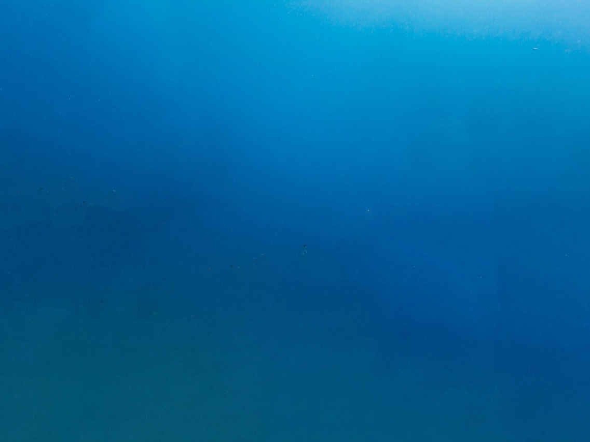

CircuitPixel
Scuba
Diving

Scuba Diving
Scuba diving is a captivating underwater adventure that allows individuals to explore the depths of the ocean with the aid of self-contained underwater breathing apparatus (SCUBA). It is a recreational activity that attracts millions of enthusiasts worldwide, offering a unique opportunity to experience marine life, stunning coral reefs, and fascinating shipwrecks. The history of scuba diving dates back to ancient times when divers used primitive breathing devices such as hollow reeds to extend their time underwater. However, it wasn't until the 20th century that scuba diving, as we know it today, began to take shape. The invention of the Aqua-Lung by Jacques-Yves Cousteau and Emile Gagnan in 1943 revolutionized underwater exploration, enabling divers to breathe freely and explore the underwater world more extensively. One of the main appeals of scuba diving is the chance to witness the breathtaking beauty of marine ecosystems. Coral reefs, often referred to as the "rainforests of the sea," are particularly captivating. These vibrant underwater ecosystems are home to a vast array of marine species, including colorful fish, sea turtles, and other fascinating creatures. Diving amidst the corals, one can experience a kaleidoscope of colors and witness nature's delicate balance in action. As scuba diving gained popularity, so did the interest in exploring shipwrecks, which are remnants of maritime history submerged beneath the ocean's surface. Shipwrecks provide a glimpse into the past, offering divers a chance to immerse themselves in underwater time capsules. They also serve as artificial reefs, providing habitats for marine life and contributing to the overall health of the underwater environment. Scuba diving is not without its challenges, and safety is of paramount importance. Divers undergo extensive training to understand the equipment, learn proper techniques, and comprehend the potential risks associated with diving. Decompression sickness, commonly known as "the bends," is a significant concern, and divers must adhere to strict dive tables or computer calculations to ascend safely and avoid this condition. In addition to the natural beauty and historical intrigue, scuba diving offers a sense of tranquility and escape from the hustle and bustle of everyday life. Descending into the deep blue waters creates a unique sensation of weightlessness, where time seems to slow down, and all that matters is the present moment. For many, scuba diving becomes a lifelong passion, driving them to explore dive sites all over the world. From the Great Barrier Reef in Australia to the cenotes of Mexico and the wrecks in the Red Sea, divers seek out diverse environments and underwater wonders. Each dive location has its own allure and surprises, encouraging divers to continuously expand their horizons. One significant aspect of scuba diving is the camaraderie it fosters among divers. Whether in local dive clubs or international dive resorts, divers often form close-knit communities. They share their diving experiences, exchange tips and stories, and create lasting friendships that span across borders and cultures. The allure of pushing boundaries and achieving new feats has led some divers to engage in extreme diving. Technical diving and cave diving, for instance, require advanced training and specialized equipment to explore challenging environments beyond the reach of recreational diving. These adrenaline-pumping experiences offer an unparalleled sense of accomplishment and adventure. As technology continues to advance, so does the equipment used in scuba diving. Modern dive computers provide real-time data on depth, time, and nitrogen levels, enhancing safety and allowing divers to maximize their time underwater. Innovations in underwater photography and videography have also allowed divers to capture and share the breathtaking sights they encounter, further promoting appreciation for the underwater world. Despite its many rewards, scuba diving comes with responsibilities. Divers are urged to follow responsible diving practices to protect marine ecosystems and minimize their environmental impact. Practices such as buoyancy control, avoiding contact with marine life, and proper waste disposal are essential to preserving the delicate balance of underwater ecosystems for future generations. In conclusion, scuba diving is a captivating and rewarding activity that allows individuals to venture into the magical realm beneath the waves. With its rich history, breathtaking marine life, stunning shipwrecks, and a sense of exploration and camaraderie, scuba diving continues to enthrall adventurers, inspiring them to appreciate and protect the hidden wonders of the ocean. As divers descend into the depths, they forge a profound connection with the underwater world, leaving them with unforgettable memories and a longing to return to the embrace of the sea. Scuba diving is a captivating underwater adventure that allows individuals to explore the depths of the ocean with the aid of self-contained underwater breathing apparatus (SCUBA). It is a recreational activity that attracts millions of enthusiasts worldwide, offering a unique opportunity to experience marine life, stunning coral reefs, and fascinating shipwrecks. The history of scuba diving dates back to ancient times when divers used primitive breathing devices such as hollow reeds to extend their time underwater. However, it wasn't until the 20th century that scuba diving, as we know it today, began to take shape. The invention of the Aqua-Lung by Jacques-Yves Cousteau and Emile Gagnan in 1943 revolutionized underwater exploration, enabling divers to breathe freely and explore the underwater world more extensively. One of the main appeals of scuba diving is the chance to witness the breathtaking beauty of marine ecosystems. Coral reefs, often referred to as the "rainforests of the sea," are particularly captivating. These vibrant underwater ecosystems are home to a vast array of marine species, including colorful fish, sea turtles, and other fascinating creatures. Diving amidst the corals, one can experience a kaleidoscope of colors and witness nature's delicate balance in action. As scuba diving gained popularity, so did the interest in exploring shipwrecks, which are remnants of maritime history submerged beneath the ocean's surface. Shipwrecks provide a glimpse into the past, offering divers a chance to immerse themselves in underwater time capsules. They also serve as artificial reefs, providing habitats for marine life and contributing to the overall health of the underwater environment. Scuba diving is not without its challenges, and safety is of paramount importance. Divers undergo extensive training to understand the equipment, learn proper techniques, and comprehend the potential risks associated with diving. Decompression sickness, commonly known as "the bends," is a significant concern, and divers must adhere to strict dive tables or computer calculations to ascend safely and avoid this condition. In addition to the natural beauty and historical intrigue, scuba diving offers a sense of tranquility and escape from the hustle and bustle of everyday life. Descending into the deep blue waters creates a unique sensation of weightlessness, where time seems to slow down, and all that matters is the present moment. For many, scuba diving becomes a lifelong passion, driving them to explore dive sites all over the world. From the Great Barrier Reef in Australia to the cenotes of Mexico and the wrecks in the Red Sea, divers seek out diverse environments and underwater wonders. Each dive location has its own allure and surprises, encouraging divers to continuously expand their horizons.